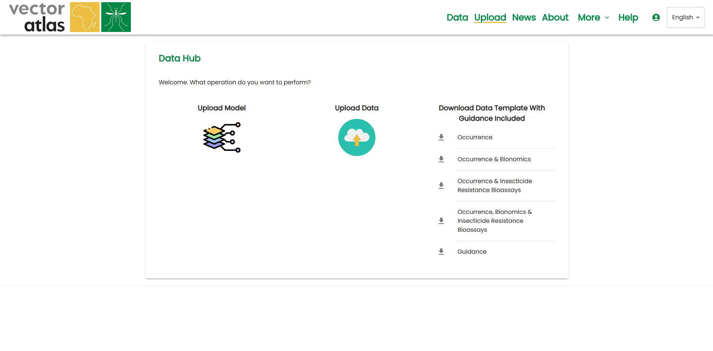
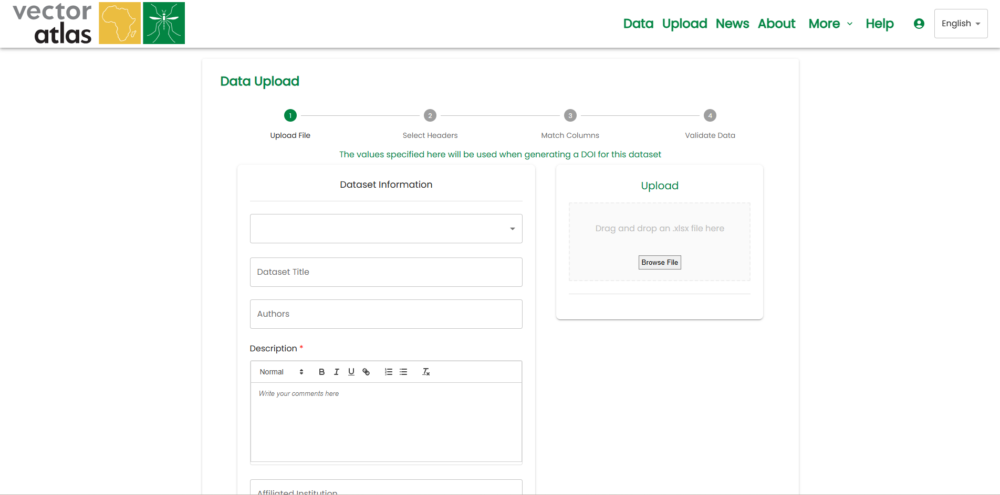
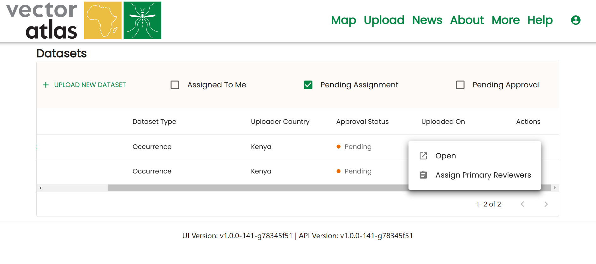
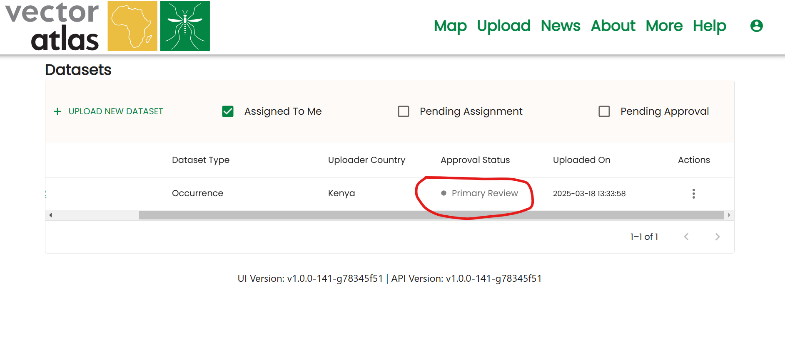

TÉLÉVERSEMENT DE DONNÉES
Cliquez sur le lien
uploaddans la barre de navigation.Vous serez dirigé vers l’interface de téléversement.

Télécharger les modèles
Les modèles aident les utilisateurs à téléverser des données dans un format compatible avec le système.
Cliquez sur les
download arrow iconssituées à droite du panneau pour télécharger les modèles.Quatre modèles principaux sont disponibles :
Premier modèle : contient uniquement la section « Occurrence ».
Deuxième modèle : contient les sections « Occurrence » et « Bionomics ».
Troisième modèle : contient les sections « Occurrence » et « IR Bioassays ».
Dernier modèle : contient les trois sections : « Occurrence », « Bionomics » et « Insecticide Resistance ».

Téléverser des données
Après avoir téléchargé et rempli le modèle :
Cliquez sur l’icône
Upload Data.Suivez le processus de téléversement en quatre étapes.
Étape 1 : sélectionnez le jeu de données et saisissez les détails :
Titre du jeu de données, description, auteurs, institutions affiliées et DOI (le cas échéant).
Étape 2 : choisissez l’une des options suivantes :
Téléverser directement vers le stockage blob pour révision, OU
Poursuivre avec la mise en correspondance des colonnes et la validation avant le téléversement vers le stockage blob.

Visualisation des jeux de données téléversés par le gestionnaire des réviseurs
Rendez-vous sur la page
Uploaded Datasets:Cliquez sur
Moredans la navigation supérieure et sélectionnezDatasets.
Filtrez les jeux de données à l’aide des cases à cocher :
Assigné à vous.
En attente d’assignation.
En attente d’approbation.

Attribution des jeux de données téléversés aux réviseurs
Les gestionnaires des réviseurs peuvent attribuer des jeux de données en cliquant sur les trois points dans la colonne d’actions.
Avant attribution : le statut est
Pending.Après attribution d’un réviseur principal : le statut passe à
Primary Review.


Les réviseurs principaux doivent réviser le jeu de données avant tout nouveau téléversement.
Le gestionnaire des réviseurs peut assigner un réviseur tertiaire, ce qui fait passer le statut à
Tertiary Review.Les réviseurs peuvent :
Demander un nouveau téléversement du jeu de données au réviseur principal.
Envoyer un e-mail au téléverseur ou au réviseur tertiaire.
Rejeter le jeu de données s’il ne répond pas aux normes requises.
Approbation des jeux de données téléversés
Une fois toutes les étapes nécessaires terminées, le jeu de données peut être approuvé par le gestionnaire des réviseurs.
Le gestionnaire des réviseurs peut également :
Valider le jeu de données avant approbation.
Envoyer un e-mail pour toute communication complémentaire.

Intégration à la base de données du VA et notification au téléverseur
Une fois le jeu de données approuvé, il est automatiquement intégré dans la base de données du Vector Atlas.
Le jeu de données est stocké dans la base de données et apparaît sur la carte, le rendant visible pour tous les utilisateurs.